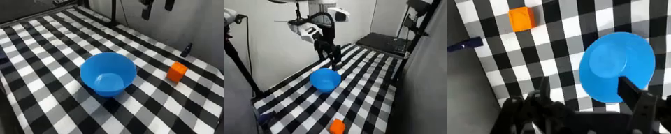

Ctrl-World imagined rollouts (tomato)
Ctrl-World-finetuned policy on the real robot (tomato)
Tomato pickup: 60% → 100% success
with Ctrl-World synthetic-rollout fine-tuning (base pi0.5 → DreamBC). Cube stays at 90% but trajectories become smoother.
Real-robot rollouts
The same task on the physical Franka under three policies — base pi0.5, the teleop-finetuned baseline, and our Ctrl-World-finetuned policy. Use the buttons to switch between the cube and tomato examples.
Base pi0.5
Teleop-finetuned
Ctrl-World-finetuned (ours)
Abstract
Generalist vision-language-action policies like pi0.5 often degrade on new real-world setups. We study whether Ctrl-World imagined trajectories can replace expensive teleoperation for task-specific adaptation. Starting from real Franka snapshots and language instructions, pi0.5 acts inside the world model; successful rollouts become behavior-cloning data for LoRA fine-tuning. On real-robot evaluation, tomato pickup improves from 60% to 100% success; cube pickup remains at 90% with qualitatively smoother motion.
Pipeline

Trajectory generation
pi0.5 acts inside Ctrl-World: from a single real observation the world model is conditioned on, it imagines the trajectory forward frame by frame. The resulting imagined observation–action pairs are what we collect as behavior-cloning data.

Starting frame (conditioning observation)
Ctrl-World imagined rollout
Rollout samples
Representative Ctrl-World imagined rollouts from dataset generation. We hand-labeled each trajectory as a clean success (usable for BC), an artifact success (task completes but the video is corrupted), or a fail.